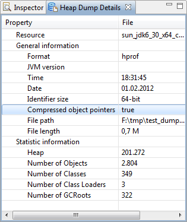

Here are descriptions of some of the more interesting or significant changes made to the Memory Analyzer for the 1.2 release.
Support for Compressed Object Pointers
Memory Analyzer can now display correct object sizes for HPROF heapdumps from Java processes running on x64 with the option -XX:+UseCompressedOops. The option -XX:+UseCompressedOops specifies that the object pointers used by the VM are compressed in order to reduce memory consumption. The HPROF heap dump file does not provide the information if the option was used or not, and until now Memory Analyzer always displayed the uncompressed size. The new version does some additional analysis of the object addresses to recognize if the object pointers are compressed, and show the correct object sizes also for such heap dumps.
One can check if the tool assumes compressed pointers or not in the "Heap Dump Details" view.
OQL Syntax Highlighting and Autocompletion
The OQL Editor has been enhanced with autocompletion and syntax highlighting capabilities

New and Noteworthy for Memory Analyzer 1.1
The New and Noteworthy document for version 1.1 is available here.